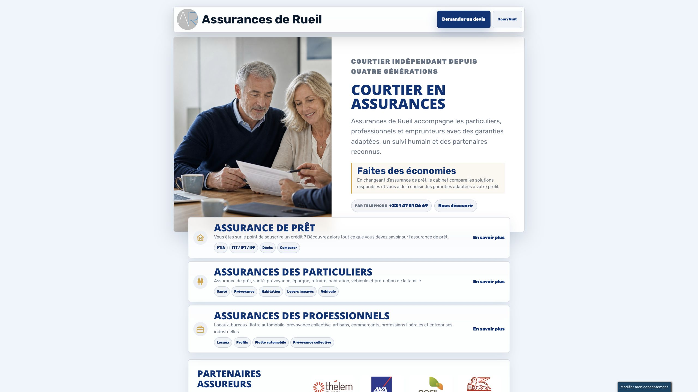
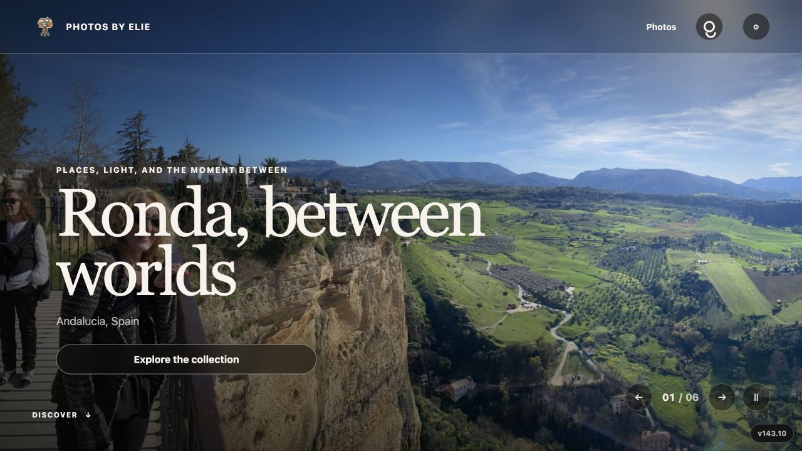

Renovación
Usted ya ha invertido trabajo real en el sitio actual. Conservamos lo que funciona, creamos una paleta de posibles estilos y le ayudamos a elegir y combinar opciones hasta llegar al sitio final para aprobar.
Renovación web / Búsqueda / Preparado para IA / Limpieza de gastos
Mejore su sitio para que se vea mejor, sea más fácil de encontrar por personas, buscadores y asistentes de IA, y ayude a detectar costes innecesarios.

Usted ya ha invertido trabajo real en el sitio actual. Conservamos lo que funciona, creamos una paleta de posibles estilos y le ayudamos a elegir y combinar opciones hasta llegar al sitio final para aprobar.
La optimización para buscadores es precisa, pero práctica. Los buscadores leen el contenido visible y los detalles internos de la página, así que seguimos una checklist: títulos, descripciones, encabezados, enlaces, redacción de servicios, ubicaciones y estructura.
Muchas búsquedas ahora empiezan en una caja de chat, desde ChatGPT hasta los resultados con IA de Google. Hacemos que los datos básicos sean más fáciles de entender: a quién atiende el negocio, qué ofrece, dónde trabaja y qué respuestas deben estar en el sitio.
Los pequeños costes web se acumulan en silencio. Buscamos suscripciones sin uso, herramientas solapadas, planes de pago, renovaciones y dudas de propiedad, y luego ordenamos qué conviene conservar, cambiar o cancelar.
Cómo trabajamos
El proceso está pensado para preservar lo útil, comparar opciones reales y convertir la dirección elegida en un sitio final que pueda aprobar con confianza.
Empezamos con una breve entrevista inicial y luego revisamos el sitio actual, lo que ya funciona, lo que conviene preservar y dónde pueden quedarse atascados los visitantes. Si hay analítica disponible, puede informar la revisión; si no, la primera pasada sigue siendo observacional y práctica.
Recibe una pequeña paleta de direcciones de diseño para comparar opciones reales en lugar de decidir a partir de descripciones abstractas.
Puede elegir una dirección o mezclar piezas de distintas opciones, incluido el sitio existente, hasta que el sitio se sienta correcto.
Una vez elegida la dirección, ajustamos las páginas, los detalles de búsqueda, la estructura preparada para IA, el flujo móvil y los elementos prácticos del lanzamiento.
Trabajos seleccionados
Algunos ejemplos públicos donde el trabajo se puede ver: mantenimiento WordPress, renovaciones orientadas a búsqueda y diseño completo para comercio fotográfico.

Un sitio francés de corretaje de seguros renovado para aclarar la navegación de servicios, reforzar señales locales y estabilizar la base WordPress.
Mantenimiento WordPress, correcciones de páginas públicas, limpieza de contenido y metadatos, pulido móvil y seguimiento técnico continuo.

Un sitio público de estrategia fiscal renovado con posicionamiento más claro, estructura de búsqueda más fuerte y flujo directo de consulta.
Limpieza de metadatos SEO, estructura de páginas fácil de citar, lanzamiento en Cloudflare Pages, páginas legales y mantenimiento técnico continuo.

Un sitio de comercio fotográfico diseñado alrededor de colecciones de viaje, páginas de fotos, campañas sociales y descargas digitales.
Sistema de marca, navegación de catálogo, páginas de campaña, flujos de políticas y soporte, y dominio público de producción.
Sobre Elie
He pasado décadas en ingeniería de software, así que miro los sitios web como algo más que un problema de superficie visual. Un buen sitio también tiene estructura, mantenibilidad, señales para buscadores, decisiones de herramientas y costes por debajo.
Para negocios independientes, me entusiasma lo rápido que está cambiando la web ahora: búsqueda con IA, mejores herramientas de diseño, automatización y nuevas formas de hacer que los sitios pequeños sean más capaces sin volverlos pesados.
Dónde se esconden los ahorros
Suscripciones: aplicaciones del sitio, herramientas de reservas, complementos de correo, productos de analítica, herramientas de imagen o herramientas de IA que nadie está usando activamente.
Solapamientos: dos servicios haciendo el mismo trabajo, plugins antiguos mantenidos por costumbre o un plan de pago elegido hace años que ahora es demasiado grande.
Renovaciones: dominios, alojamiento, temas, plugins y directorios empresariales que se renuevan automáticamente pero ya no apoyan al negocio.
Propiedad: accesos poco claros, facturación dispersa y cuentas de proveedores que dificultan saber qué es esencial y qué se puede eliminar. Los ahorros se tratan como oportunidades para verificar, no como una garantía de retorno del proyecto.
Presupuesto
Inicio: la mayoría de los proyectos empiezan con un paquete inicial práctico de 10 horas, para poder revisar, diseñar y avanzar sin un ciclo largo de propuesta.
Contabilidad: el trabajo se registra en incrementos claros de 100 $/hora, con notas sobre lo que se hizo y lo que cambió.
Visibilidad: se le mantiene al día a medida que se usa el presupuesto, con una revisión manual clara cuando el paquete alcanza el 50 %.
Respuestas rápidas
Estas son las respuestas en lenguaje claro que las personas, los buscadores y los asistentes de IA deberían poder extraer del sitio.
Web By Elie es para negocios independientes que ya tienen un sitio web o herramientas web y quieren una renovación práctica, señales de búsqueda más claras, estructura legible para IA y una revisión del gasto web evitable.
La primera pasada revisa el sitio actual, conserva el trabajo útil, identifica fricciones para visitantes, compara direcciones de diseño y revisa títulos, descripciones, encabezados, redacción de servicios, enlaces, flujo móvil, datos legibles para IA y costes evitables.
La revisión comprueba si una persona o un asistente de IA puede identificar sin adivinar el negocio, sus servicios, clientes previstos, zonas de servicio, precios o factores de precio, pruebas y siguiente paso. Registra datos ausentes o contradictorios y recomienda correcciones concretas, sin prometer aparecer en una respuesta de IA.
No se garantiza ningún posicionamiento, tráfico, cliente potencial ni aparición en respuestas de IA. El trabajo mejora la claridad, rastreabilidad, estructura y calidad de las respuestas para que el sitio sea más fácil de entender.
No por defecto. El proceso empieza preservando lo que funciona y luego propone mejoras prácticas de diseño y estructura antes de preparar la dirección final del sitio.
La mayoría de los proyectos empiezan con un paquete inicial de 10 horas. El trabajo se registra a 100 $/hora con notas de progreso y una revisión manual cuando el paquete alcanza el 50 %.
Siguiente